e-Flex
Borrador inicial para revision visual
Este borrador usa exclusivamente assets review-draft del reset visual 2026-05-13 para revisar el paquete completo antes de publicacion final.
1. Introduccion
Este manual resume el uso esencial de e-Flex para una implementacion web clara, directa y lista para maquetacion.
2. Capacidades clave
- Conectividad: Wi-Fi 2.4 GHz con vinculacion y gestion desde la app Tuya.
- Modos de apertura: huella dactilar, contrasena, tarjeta IC y llave mecanica de respaldo.
- Funciones destacadas: timbre integrado, modo siempre abierto y doble verificacion.
- Seguridad: bloqueo temporal tras 5 intentos fallidos consecutivos.
- Energia: 4 baterias AA y puerto de energia de emergencia.
3. Vista general y primeros pasos
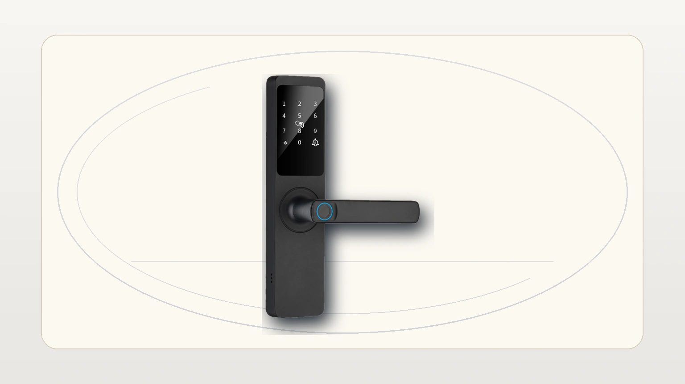
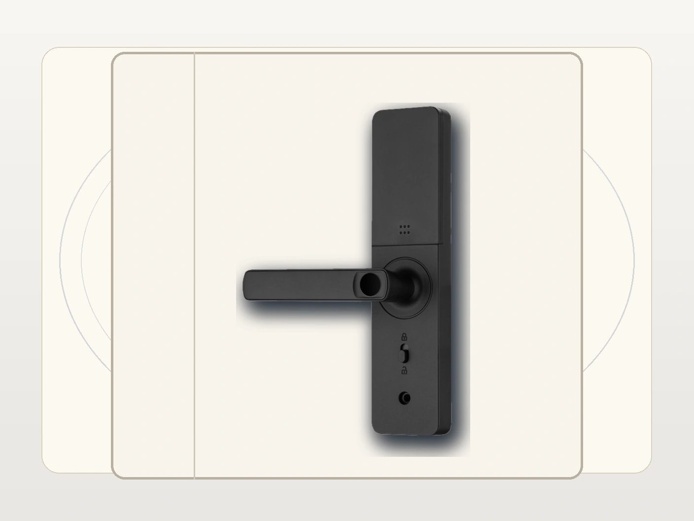
Antes de iniciar la configuracion:
- verifica que la cerradura este bien instalada y que la puerta no fuerce el pestillo
- instala las baterias y comprueba que el panel responde al tocarlo
- prueba la llave mecanica de respaldo
- define quien sera el administrador principal
4. Crear el administrador principal
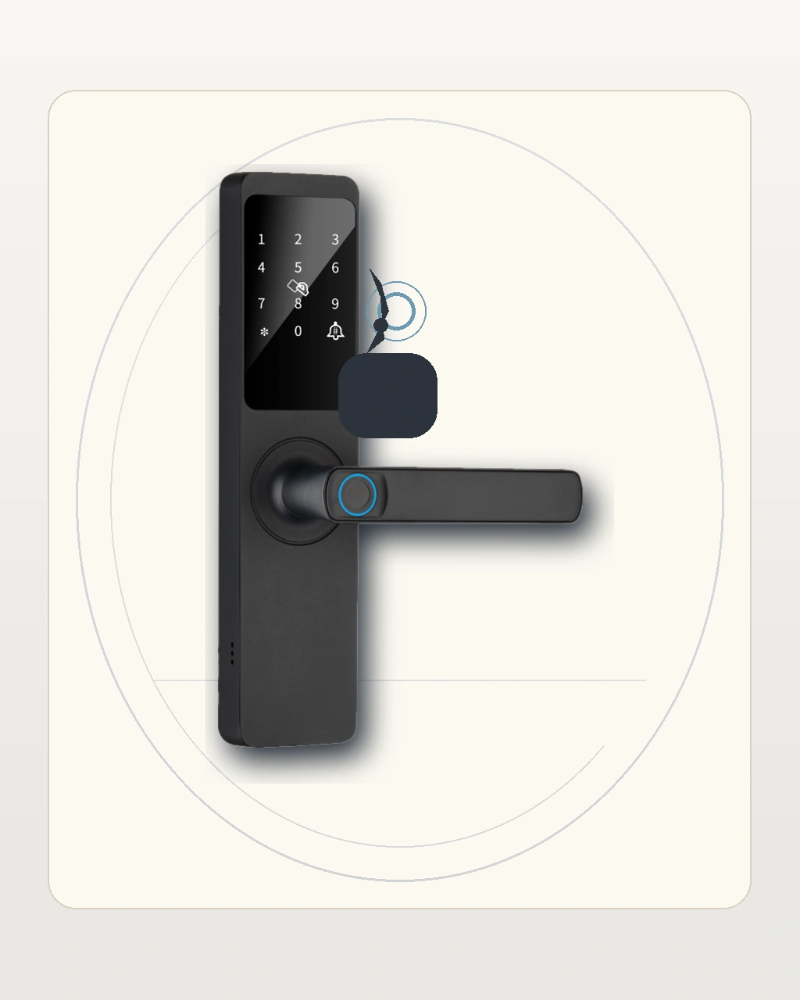
Flujo recomendado:
- activa el panel frontal
- entra al menu de usuarios o administracion de la cerradura
- elige la opcion para agregar administrador
- registra al menos un PIN y una huella de respaldo
- guarda el registro y prueba el acceso de inmediato
5. Registrar una contrasena o PIN
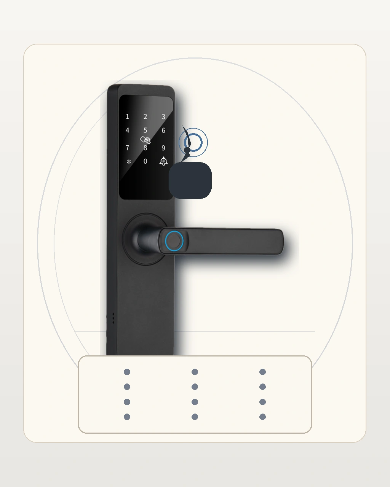
Buenas practicas:
- usa un PIN facil de recordar pero dificil de adivinar
- evita reutilizar la misma clave del administrador para todos los usuarios
- prueba la clave dos o tres veces seguidas antes de cerrar el proceso
6. Registrar una huella
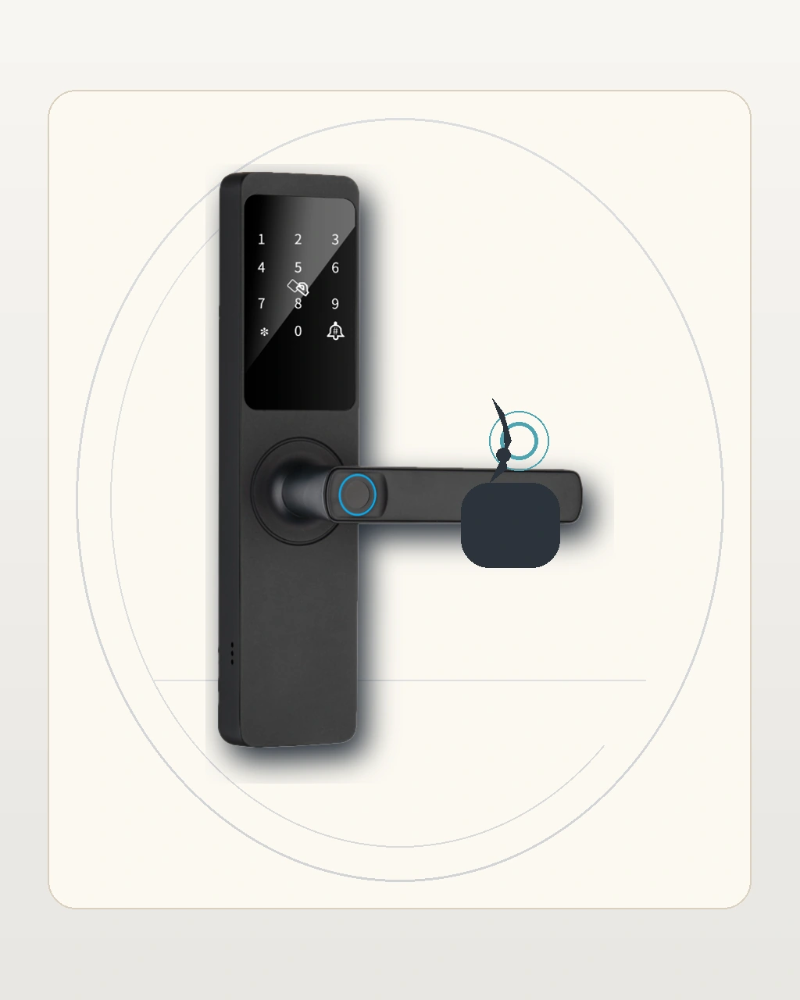
Para registrar una huella de forma consistente:
- entra al alta de usuarios desde el panel
- elige huella como metodo de acceso
- coloca el dedo limpio y seco sobre el lector
- repite el apoyo hasta completar el registro
- valida el acceso varias veces seguidas
7. Ajustes basicos e idioma
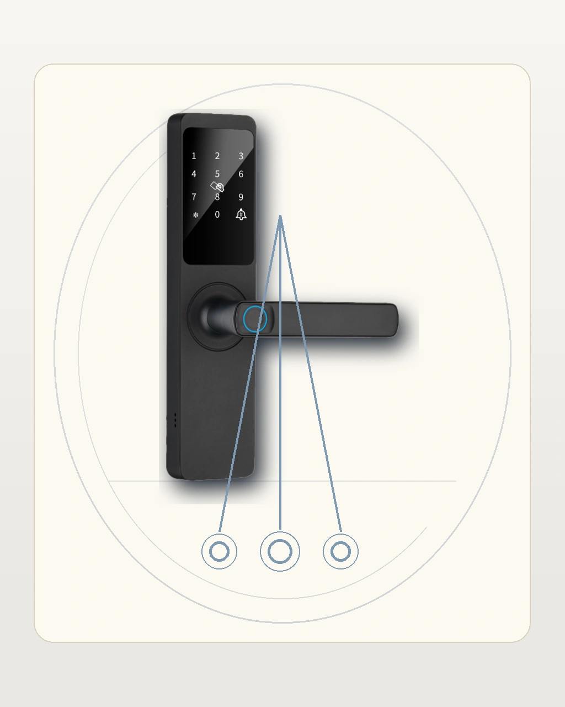
Usa esta seccion para documentar idioma, fecha, hora o ajustes equivalentes de la version instalada. El copy explicativo debe vivir en la pagina web, no como texto incrustado dentro de la imagen.
8. App Tuya y operacion remota
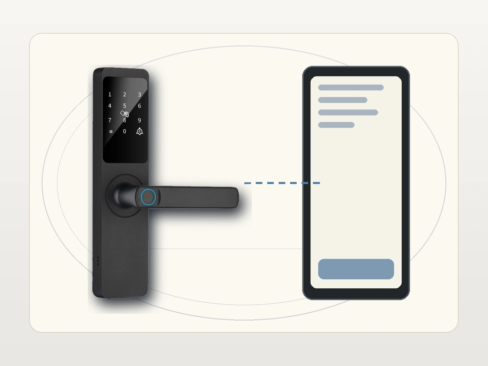
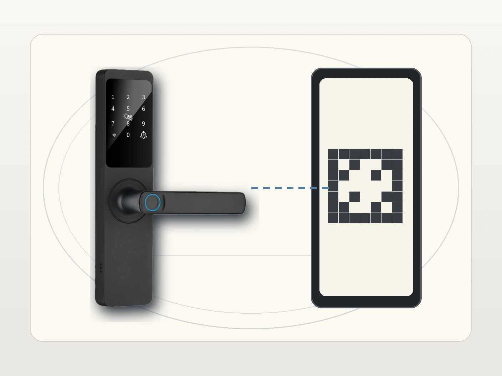
Para la pagina web, presenta el flujo de app como apoyo contextual:
- abrir la app Tuya
- agregar el dispositivo desde la categoria correcta
- usar QR solo cuando el flujo real lo pida
- validar control remoto y registro de eventos si la instalacion lo permite
9. Solucion de problemas
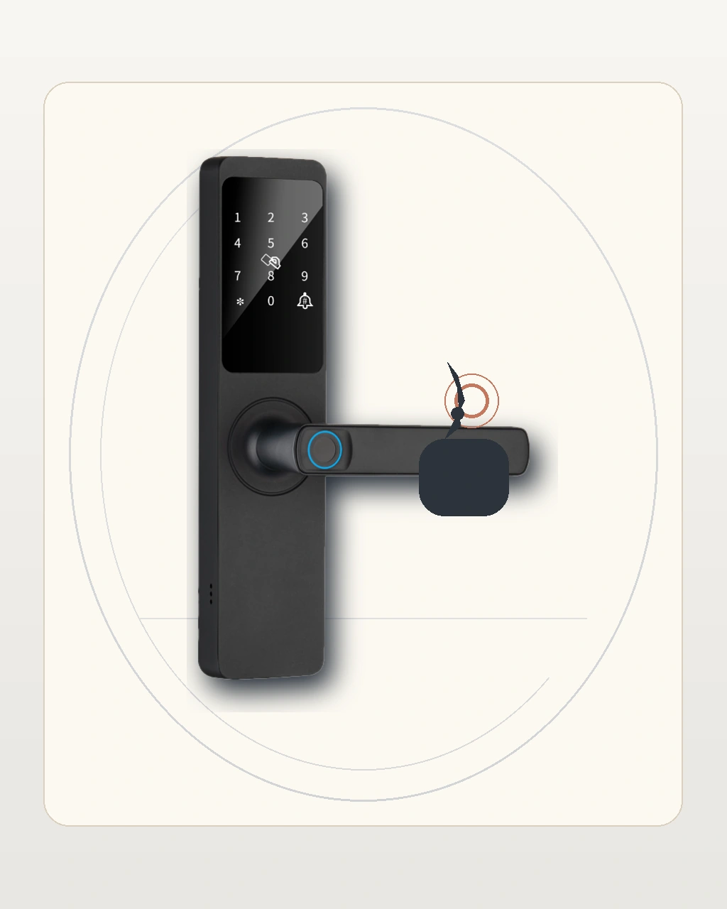
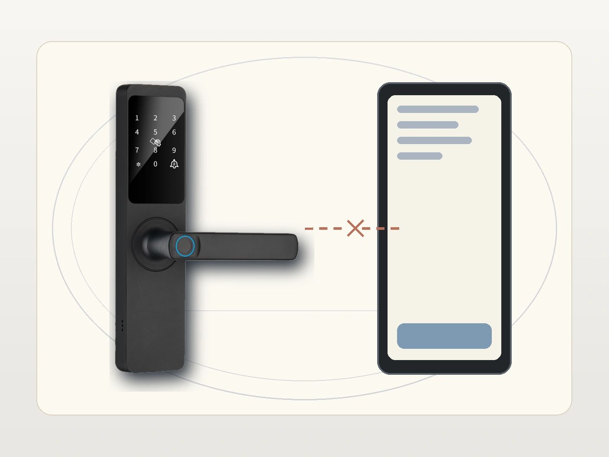
Checklist editorial para esta seccion:
- mantener la cerradura visible incluso cuando aparece el telefono
- describir acciones de limpieza, reintento y reconexion sin depender del texto de la imagen
- separar claramente falla biometrica de falla de vinculacion
10. Descargas y documentacion
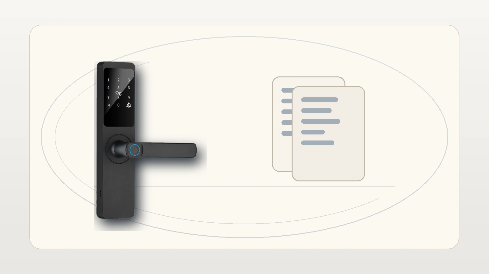
Esta imagen puede apoyar una seccion breve de manual PDF, ficha tecnica, instalacion y soporte postventa.
11. Estado del borrador
Este archivo es una version integral de revision. Los assets review-draft fueron reconstruidos bajo el reset visual 2026-05-13 y quedan listos para inspeccion antes de publicar el paquete final.